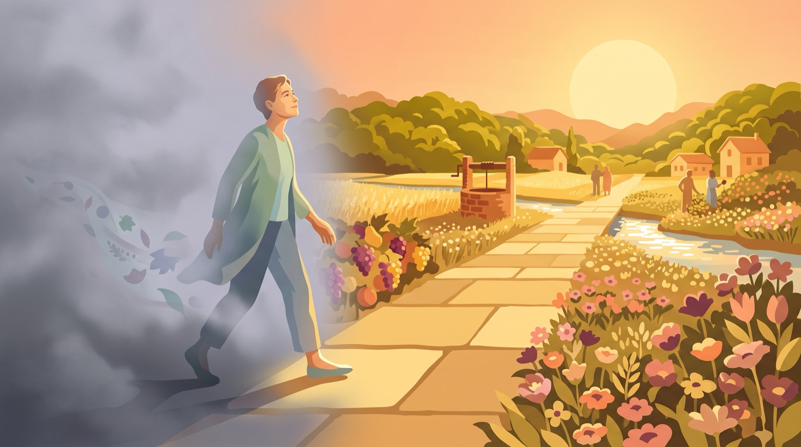
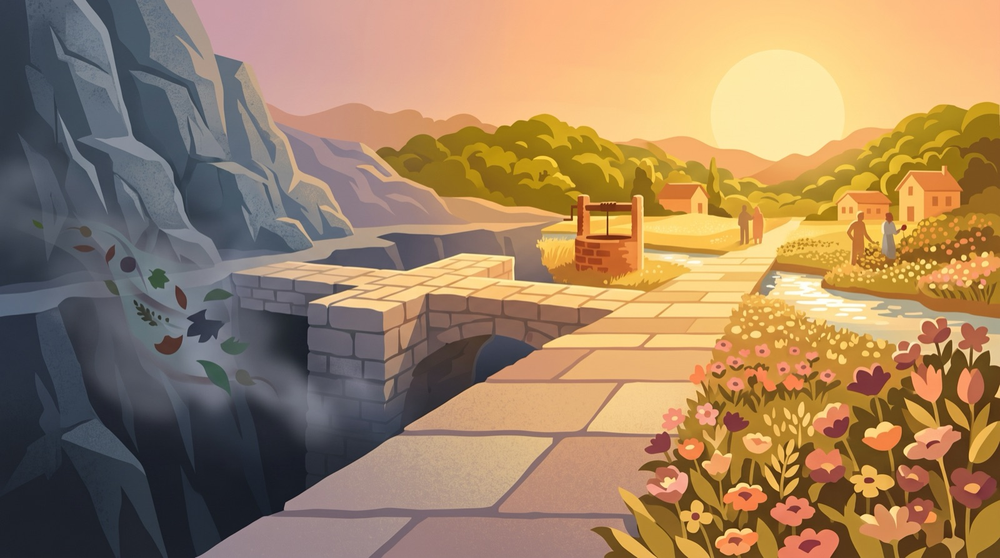
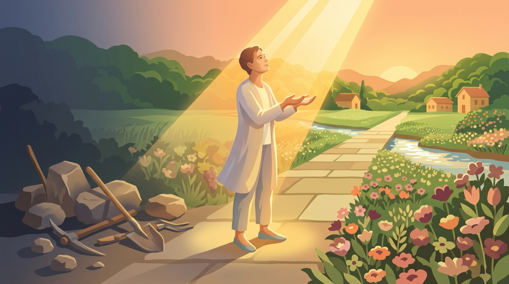
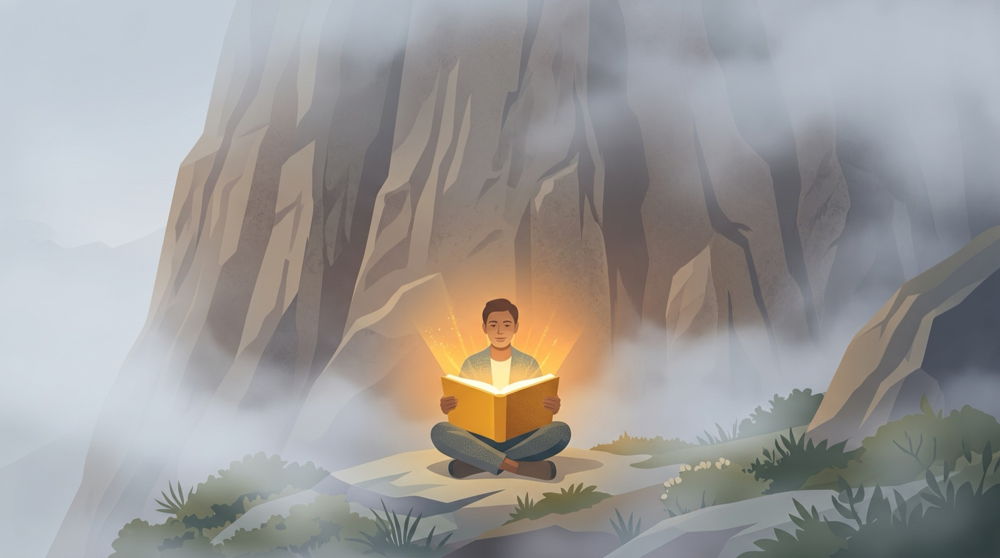

Урок 1. Твоя новая жизнь
Новая Жизнь!
Слишком громко сказано? Нет! Личное познание Бога по-настоящему внесет в твою жизнь радикальное изменение. Это начало твоей духовной жизни.
С этого момента ты живешь с всемогущим и любящим Богом.

Помнишь ли ты брошюру «Четыре Духовных Закона»? Она вкратце разъяснила все, что необходимо для познания Христа. Краткий просмотр этих истин будет полезен в понимании принципов, которые составляют основу роста в этом новом взаимоотношении:
1 Божья любовь
Господь любит тебя и создал тебя для личного взаимоотношения с Ним.
2 Реальная проблема
Человек грешен и виновен перед Богом, Который совершенен и праведен. Грех отдаляет человека от Бога и нарушает общение с Ним.
- Ложь
- Эгоизм
- Ненависть
- Жадность
- Гордость
3 Иисус Христос - единственный выход!
Иисус Христос - единственный выход для человеческого греха. Только через Него ты можешь иметь личную связь с Богом.
4 Твой выбор
Каждый человек должен лично принять решение пригласить Иисуса Христа войти в свою жизнь как Господа и Спасителя.

В Святом Евангелии от Иоанна 17:3 Иисус сказал: «Сия же есть жизнь вечная, да знают Тебя, единого истинного Бога, и посланного Тобою Иисуса Христа».
Далее объясняется, как можно обрести уверенность, что проведешь вечность с Богом.
1 На чем основывается уверенность в твоих взаимоотношениях со Христом?
«Ибо благодатью вы спасены через веру, и сие не от вас, Божий дар: не от дел, чтобы никто не хвалился,»
(Еф.2:8,9).
- БЛАГОДАТЬ
- СПАСЕНИЕ
- ВЕРА
БЛАГОДАТЬ
Благодать исключает собственные усилия и устремляет взор на Божью доброту. Вот почему благодать не является результатом наших заслуг.

СПАСЕН
Спасение предполагает существование глубокой нужды. Ты был спасен от вечного осуждения и был освобожден от обязательства заплатить самому за свои грехи.
ВЕРА
Вера не есть что-то абстрактное. Например, ты доверяешься автобусу, чтобы он довез тебя домой, доверяешь хорошему другу, чтобы он помог тебе хорошим советом, и т.д.
Очень важно знать, кому ты доверяешь. Поэтому ты сможешь ответить на следующий вопрос:
2 Взаимоотношение, которое превосходит любое ожидание.
- ЖИЗНЬ ВЕЧНАЯ
- НОВАЯ ЖИЗНЬ
- ХРИСТОС В ТЕБЕ
- ДИТЯ БОЖЬЕ
- ПРОЩЕНИЕ ГРЕХОВ
Следующие истины изменят твою жизнь!
А)Христос простил все твои грехи:
Прочитай Колоссянам 1:13-14.
В момент, когда ты доверился Христу как Спасителю, все твои грехи были прощены (все грехи, совершенные в прошлом, настоящем, и будут совершены в будущем)
Б)Христос подарил тебе новую жизнь:
Открой 2 Кор. 5:17.
В)Христос вошел в твою жизнь и никогда не покинет тебя:
Прочитай Евр. 13:5б.
Г)Ты стал Божьим чадом:
Прочитай Иоанна 1:12.
Когда ты принял Христа, ты начал личное взаимоотношение с Богом.
Христос подарил тебе вечную жизнь:
Прочитай 1 Иоанна 5:11-13

Все эти преимущества, которыми ты можешь воспользоваться, являются результатом смерти Христа на кресте за тебя. Ни одно из них не может быть приобретено собственными усилиями. Ты приобрел их в момент, когда доверился Христу как Спасителю.
3 Как реагировать на сомнения относительно твоего нового взаимоотношения с Христом?
Несмотря на то, что эмоции имеют свою роль и важность в жизни и опыте человека, мое взаимоотношение с Иисусом Христом основывается на делах, а не на чувствах, которые могут изменяться изо дня в день.
Сомнения, вопросы и изменчивые (непостоянные) эмоциональные переживания являются общими элементами жизни любого человека, но они, все-таки, не могут составить твердую основу для твоего взаимоотношения с Иисусом Христом. Христианин живет через веру в Бога и Его Слово.
Рисунок снизу иллюстрирует взаимоотношение между истиной (Бог и Его Слово), верой (доверие Богу и Его Слову) и чувствами (эмоциональные реакции).
ИСТИНА
ВЕРА
ЧУВСТВА
Поезд движется в той же степени хорошо и без последнего вагона. Но было бы бесполезно и абсурдно пытаться тянуть поезд при помощи последнего вагона. Подобным образом, христианин не может полагаться на изменчивые чувства в своем взаимоотношении с Христом, но на незыблемый авторитет Бога и Его Слова. Чем больше узнаешь из Его Слова, тем более способным становишься удалить всякое сомнение. Таким образом, твои эмоции станут в большей степени изображением правды Господа, чем меняющихся жизненных обстоятельств.
4 Ну, а сейчас? Что же делать дальше?
Эти замечательные вещи являются реальностью в жизни каждого человека, который принял Христа. Сейчас очень важно расти в этом новом взаимоотношении. В течение последующей недели сконцентрируй свое внимание на этих истинах:
- Ты был полностью прощен: Кол. 1:13-14; 2:13
- Ты стал Божьим чадом: Иоанна 1:12; Рим. 8:15; 1 Иоанна 3:1
- Христос вошел в твою жизнь: 2 Кор. 5:17; Еф. 2:4-5
- Ты начал новую жизнь: 1 Иоанна 5:11-13; Иоанна 5:24; 10:27-29
- Имеешь жизнь вечную 1 Иоанна 5:11-13; Иоанна 5:24; 10:27-29
Прочти указанные стихи, сконцентрируй свое внимание на каждой истине и размышляй над ними в течение недели. Благодари Господа за то, что эти истины касаются тебя лично. Их познание жизненно важно для твоего роста во Христе.
Material publicat de
Here’s Life Publishers, Inc.
© 1984, Campus Crusade for Christ, Inc.
Traducere în lb. rusa, 1998
Toate drepturile rezervate.